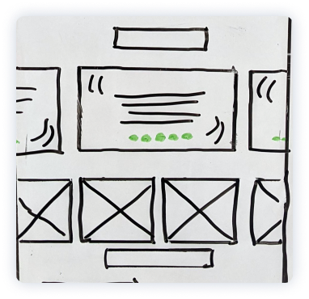
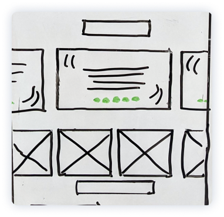

Website Redesign
Case Study
Client: Barndog Grooming
Designer: Sam Lynch

Product
Established in 2017, Barn Dog Grooming is a growing small business located in Barnstead, New Hampshire. Their website (BarnDogGrooming.com) is used to drive customers to their business and provide visitors with contact information.
Challenge
The current website is outdated and no longer suits visitors’ needs. The owner is extremely busy running the business and can not provide any new content or assets. The website needs to be redesigned in order to stay relevant in their market.
Solution
Design, prototype, test, code and launch a fully functional and responsive website. The new site will help direct new customers and grow the business.
Brief
Project Type
Individual
My Role
UX Researcher, UX/UI Designer, Prototyper, Front-End Developer
Tools
Figma, Illustrator, Photoshop, Sublime Text, Github
Project Type
8 Weeks
November 1, 2021 — December 31, 2021
Product Roadmap

Stakeholder Interview

I met with the stakeholder who is the owner of Barndog Grooming. I conducted an interview to hear their requirements for the site redesign as well as gain insight in to their customers.
Customer Insights
- Majority of customers live within a 30 minute drive.
- Business is growing quickly with a mix of new and returning customers.
Key Problems
- Visitors can’t find hours of operation.
- The current mobile experience is very poor.
- Business has over 50 5-star Google reviews that are not currently featured.
- Some customers are don’t like seeing pictures of their ungroomed pets.
- The price of services has changed and is incorrect.
Research
Site Analysis
The current website was avaluated for Jakob Nielsen's 10 general principles for interaction design.
Negative Findings
- Inconsistent spacing
- No calls to action
- Dull color palette
- Erratic alignment
- Parallax headers do not work properly
Competitor Analysis
A competitor analysis was run on websites of the three nearest dog groomers.
|
Pupper City Dog Grooming Barnstead, NH |
Lakeside Grooming Gilmanton, NH |
Shampoodles Alton, NH |
|
|
Testimonials |
|||
|
Map |
|||
|
Responsive Design |
|||
|
Contact Info |
User Persona
Meeet Angela
She lives in Pittsfield, NH with her partner and her 4-year-old Yorkshire Terrier Rufus. She has to bring Rufus to a groomer every 4-6 weeks to keep his coat healthy and clean.

Sitemap Redesign
Original Sitemap
A sitemap was created to outline the current site architecture.

Redesign
A new sitemap was designed in order to direct users to the most relevant content first.
Design
Wireframes
Sketches and wireframes were designed for each page on the sitemap.
 



Styleguide
High-Fidelity Designs
Styles, colors and assets were added to the wireframes. Since I had limited existing content to use, I decided to fill space with blob shapes and illustrations. I contracted an illustrator (fiverr.com/santiagolztn) to draw two dog grooming illustrations.
Prototypes
Clickable prototypes were created on Figma for the desktop and mobile site designs.


Testing
Usability testing was conducted on the desktop and mobile prototypes with 5 subjects. An A/B test was conducted on the mobile navigation layout with the same 5 subjects.
Tasks
- Make a dog grooming appointment
- Determine if the business is open on Friday at 9am
- Contact the owner of the business
- Determine if the business offers pet ear cleaning
- Read 3 testimonials
Results
Takeaways
- Need to make it clear to the user they need to call to make an appointment.
- Adjust font spacing and list style in the services section.
- The majority of users contacted the owner through the contact section at the bottom.
A/B Testing
Do users prefer a top or bottom navigation on the mobile prototype?

Front-End Development
Languages
Variables & Mixins
SASS variables and mixins were written for all colors, classes, and components based on the style guide.
Maintaining variables allowed flexibility if any colors or styles needed to change in future iterations.
$header_font: 'PoppinsSemibold',
sans-serif;
$body_font: 'OpenSansLight',
sans-serif;
$background_color: #E6F2FF;
$text_color: #E6F2FF;
$accent_color: #3478C5;
$nav_color: #032F61;
$star_yellow: #efba42;
$button_blue: #599BE8;
$light_blue: #C1DDFE;
$cell_blue: #3477C6;
$white: #FFF;
@mixin body_font_mixin {
@include p_size;
font-family: $body_font;
display: block;
color: $white;
font-weight: 100;
margin-bottom: 10pt;
}
@mixin head_font_mixin {
font-family: $header_font;
@include header_size;
display: block;
color: $text_color;
font-weight: bold;
margin-bottom: 0.5em;
}
@mixin header_size {
font-size: 48pt;
@media only screen and
(min-width: 1020px) {
font-size: 60pt;
}
@media only screen and
(min-width: 1200px) {
font-size: 72pt;
}
}
CSS Grid
Since the Figma designs were used a grid, I used CSS-grid to handle the site layout and simplify the responsive design process.
The mosaic image layout was handled by using grid-template-areas for the featured pet gallery.
.pet_gallery {
margin-top: 1em;
grid-area: 3 / 2 / 3 / span 6;
display: grid;
border-radius: 5px;
grid-template-areas:
"img1 img1 img3 img5 img5 img8"
"img1 img1 img4 img6 img9 img9"
"img2 img2 img4 img7 img9 img9";
grid-template-rows: 10vw 10vw 10vw;
grid-gap: 10px;
}
.pet_gallery {
grid-area: 3 / 2 / 3 / 2;
display: grid;
grid-gap: 5px;
border-radius: 5px;
grid-template-areas:
"img1 img3"
"img2 img2"
"img4 img6"
"img4 img8"
"img5 img5"
"img9 img7";
}
Responsive Navigation
On mobile screens, the CSS displays a hamburger menu. JavaScript toggles the mobile nav by adding the “responsive” class when the hamburger is clicked.
Launch
After QA testing on a development environment, the new website for BarndogGrooming.com was officially launched on December 29, 2021.
THANK YOU
For reading my case study